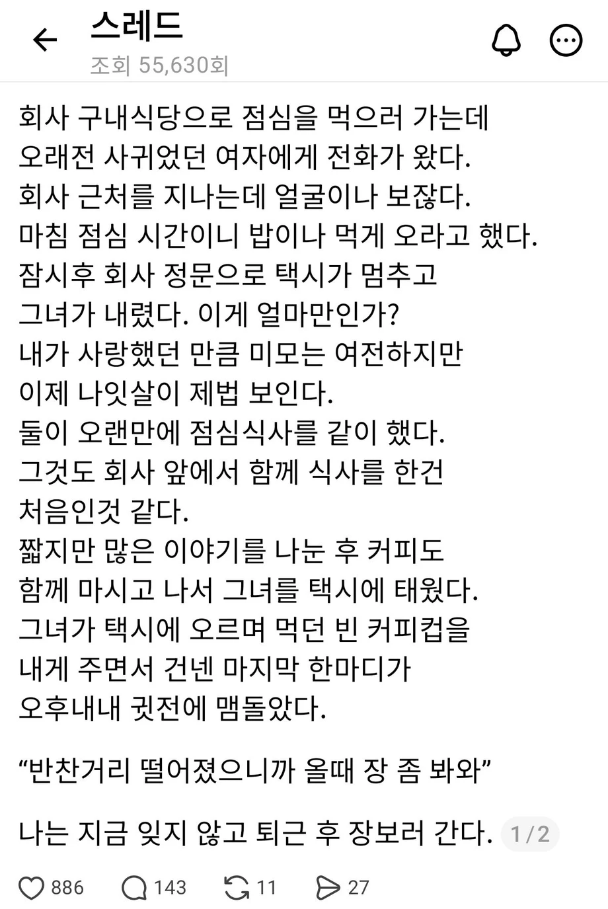

117 · 28 · 10 시간 전 · 원문

수집 당시 댓글 28개
라던데 · 11 시간 전
스핔이 · 11 시간 전
하이네켄 · 11 시간 전
밖에서 보면 이쁘신가봐
↳ 답글 · 까모 · 10 시간 전
남편 직장근처에 밥먹으러 오는데 또 안꾸미고 가기도 애매할듯 ㅋㅋㅋ
↳ 답글 · 슬프면짖는개 · 10 시간 전
평소에 기초화장도 잘안하던사람이
남편 지인들 보는 자리가되면 색조까지 풀메하더라ㅋㅋ
↳ 답글 · 새콤달콤동치미 · 9 시간 전
전투력 풀챠징
두둠칫둠ㅅ · 10 시간 전
맛있다 이런거 더 가져와
환율변동 · 10 시간 전
행복한부부네
장래희망휴먼 · 10 시간 전
장은?
아.
둔두니 · 10 시간 전
아… 저기서 젤 무서운건
장보라고 시키고 물품을 얘기안한거임
모든 선택의 결과는 쿠사리로 수렴한다
↳ 답글 · 밀치 · 10 시간 전
애호박이나 쥬키니 사와
↳ 답글 · 애널키스 · 1 시간 전
원투 주키니
↳ 답글 · 아그토 · 9 분 전
환영합니다람쥐다람쥐다람쥐
↳ 답글 · 미네르바의부엉이 · 7 시간 전
히에에엑
프로쎾써 · 10 시간 전
Ultragear · 10 시간 전
으으으으으으그 · 10 시간 전
영포티문학
↳ 답글 · 오타니 · 10 시간 전
진짜 존나 영포티들은 이게 재밌냐?
↳ 답글 · 20130819 · 10 시간 전
아이고 배야 깔깕깕
↳ 답글 · 오늘도어제같이 · 8 시간 전
가정사 문제 있냐?
↳ 답글 · 오타니 · 6 시간 전
뜬금없이 너네집 얘기는 왜 함?
↳ 답글 · 화간호사 · 1 시간 전
오늘도 개붕이가 니네 아빠냐??
↳ 답글 · 무등산호카게 · 9 시간 전
ㄹㅇ 포티들 3인칭놀이하는거 역겨움
하리보젤리 · 10 시간 전
ㅋㅋㅋㅋ
토끼굴 · 8 시간 전
뭐 어쩌라는 거임?
Classic · 8 시간 전
장르: 공포
흑혈 · 6 시간 전
씻는다고?
개드립은처음입니다 · 30 분 전
내무부장관문학
댓글
수집 당시 댓글 28개
라던데 · 11 시간 전
스핔이 · 11 시간 전
하이네켄 · 11 시간 전
밖에서 보면 이쁘신가봐
· 까모 · 10 시간 전
남편 직장근처에 밥먹으러 오는데 또 안꾸미고 가기도 애매할듯 ㅋㅋㅋ
· 슬프면짖는개 · 10 시간 전
평소에 기초화장도 잘안하던사람이
남편 지인들 보는 자리가되면 색조까지 풀메하더라ㅋㅋ
· 새콤달콤동치미 · 9 시간 전
전투력 풀챠징
두둠칫둠ㅅ · 10 시간 전
맛있다 이런거 더 가져와
환율변동 · 10 시간 전
행복한부부네
장래희망휴먼 · 10 시간 전
장은?
아.
둔두니 · 10 시간 전
아… 저기서 젤 무서운건
장보라고 시키고 물품을 얘기안한거임
모든 선택의 결과는 쿠사리로 수렴한다
· 밀치 · 10 시간 전
애호박이나 쥬키니 사와
· 애널키스 · 1 시간 전
원투 주키니
· 아그토 · 9 분 전
환영합니다람쥐다람쥐다람쥐
· 미네르바의부엉이 · 7 시간 전
히에에엑
프로쎾써 · 10 시간 전
Ultragear · 10 시간 전
으으으으으으그 · 10 시간 전
영포티문학
· 오타니 · 10 시간 전
진짜 존나 영포티들은 이게 재밌냐?
· 20130819 · 10 시간 전
아이고 배야 깔깕깕
· 오늘도어제같이 · 8 시간 전
가정사 문제 있냐?
· 오타니 · 6 시간 전
뜬금없이 너네집 얘기는 왜 함?
· 화간호사 · 1 시간 전
오늘도 개붕이가 니네 아빠냐??
· 무등산호카게 · 9 시간 전
ㄹㅇ 포티들 3인칭놀이하는거 역겨움
하리보젤리 · 10 시간 전
ㅋㅋㅋㅋ
토끼굴 · 8 시간 전
뭐 어쩌라는 거임?
Classic · 8 시간 전
장르: 공포
흑혈 · 6 시간 전
씻는다고?
개드립은처음입니다 · 30 분 전
내무부장관문학